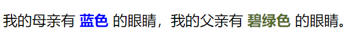
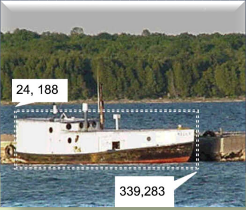
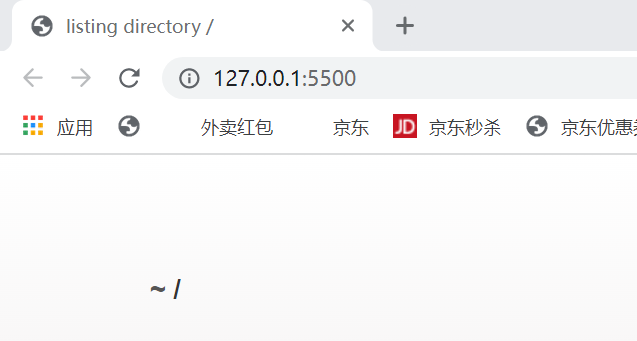
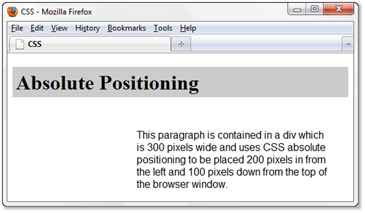

HTML & CSS 学习笔记
当时学web前端课的时候写的笔记，搬运一下。
HTML
简介
- 超文本标记语言（英语：HyperText Markup Language，简称：HTML）是一种用于创建网页的标准==标记语言== 。
- 标记语言：标记语言是一套标记标签 (markup tag)
#####html的作用：
- HTML 使用标记标签来描述网页
html文档的后缀名
- .html
- .htm
一个完整的HTML页面包括什么？
-
HTML 文档包含了HTML标签 及文本内容
标签：
标签是由尖括号包围的关键词，并且是成对出现的，其中第一个为开始标签（起始标签），第二个为结束标签（闭合标签）。
注：结束标签前比开始标签多了一个 ‘/’
HTML网页结构
1、头部声明：声明为HTML5文档
- 声明不区分大小写
几种通用声明
HTML5：
HTML 4.01
2XHTML 1.0
2
2、文档主体
- 头部元素
2
3
4
5
6
7
<head>
<meta charset="utf-8">
<meta charset="gbk">
<title>逸一时误一世</title>
</head>
</html>
- 为HTML页面的根元素
- 元素包含了文档元数据（==meta== ）
例如为定义网页编码格式为UTF-8
注：中文网页需要用UTF-8编码或gbk编码
元素为文档标题 可见的页面内容
注：只有区域才会在浏览器中显示
<body> <h1>标题1</h1> <p1>段落1</p1> </body>
2
3
4
5
6
7
8
9
10
11
12
13
14
15
16
17
18
- - <body>元素包含范围内为可见页面内容
- <h>元素定义一个标题
- <p1>元素定义一个段落
- > 注：在浏览器中使用F12可以开启网页调试模式
### HTML元素
///
* 横线
```html
<hr>
<hr color="red"> //红色横线
-
几个特殊符号的显示：
1
2
3
4
5  //空格
© //©
< //小于号
> //大于号
& //&
网页语言格式：
1 | <html lang="en"> |
行对齐格式：
1 | <h align ="left">abc</h> //左对齐 |
####字体格式：
#####基本格式：
1 | <b></b> //字体加粗 |
其他格式：
font标签：
1 | <font color="blue"></font> //颜色 |
adress标签
定义文档作者/所有者的联系信息。
如果
元素位于 元素内部，则它表示该文档作者/所有者的联系信息。如果
元素位于上面一行为adress标签的显示效果
列表
无序列表
1 | <ul> |
效果如上图
有序列表
1 | <ol> |
效果如图
div标签
-
在div元素之间的段落或文字将会以div标签设置的格式展现，如下方示例中，div标签内的段落或文字将会变为红色
1
2
3<div style = "color:red">
</div>
Span标签
-
在一个文段中特定的设置某些文字的格式
1
<p>我的母亲有 <span style="color:blue;font-weight:bold">蓝色</span> 的眼睛，我的父亲有 <span style="color:darkolivegreen;font-weight:bold">碧绿色</span> 的眼睛。</p>
效果：

table元素：表格
-
在网页中创建一个表格
1
2
3
4
5<table border = "1">//table标签，表格主体 border为表格边框粗细
<tr>//table row列
<td></td>//行元素
</tr>
</table> -
colspan属性：表格跨列合并操作
-
rowspan属性：表格跨行合并操作
-
align属性：水平对齐
-
valign属性：垂直对齐
map标签和area标签（点击跳转）
-
map标签：划定一块区域作为map区域
-
area：声明map区域内的一块区域为area区域，包含三个属性
- href Attibute ：区域的跳转链接
- shape Attribute ： area的形状（参数可为rectangle, circle, or polygon）
- coords Attribute：area的坐标
-
示例：
1
2
3
4
5
6<map name="boat" id="boat">
<area href="http://www.doorcountyvacations.com" shape="rect"
coords="24, 188, 339, 283" alt="Door County Fishing">
</map>
<img src="fishingboat.jpg" usemap="#boat" alt="Door County“
width="416" height="350">
段落和其他格式设置
-
style标签和class的使用//css
在style标签中可以定义对应段落标签内部内容的格式，使用方式如下：
1
2
3
4
5
6
7<style>
h{letter-spacing:50px} //字间距
.text{text-indent:50px} //首行缩进
</style>
<h>114514</h>
<p class = "text"> 1919810</p>
html超链接
网页文本内部跳转
网页内部跳转需要索引
-
<a href ="#abc">xxx</a>//跳转超链接加上# ...... <p id ="abc">//id为要跳转到的标签 ABC </p>1
2
3
4
5
##### 跳转到外部文件/网页
* ```html
<a href ="url">xxx</a>
HTML表单：页面动态化
form标签
from标签中绝大多数的内容是input
input标签
type类型全部参数见：https://www.runoob.com/tags/tag-input.html
textarea标签
textarea标签定义一个多行的文本输入控件
尺寸大小调节：使用 CSS 的 height 和 width 属性
在vscode中调试html网页
Live Server插件
- 在插件中安装LIve Server插件
使用Live Server可能出现的一点问题
-
点击Open With Live Server后在浏览器中没有正常显示页面而是出现 listing directory / 页面
解决方法：出现此问题的原因是在vs中创建新文件的时候没有确定文件格式，重命名添加文件后缀.html后即可正常显示网页
CSS
-
CSS标签格式（在style标签中）：
Selector + declaration property + declaration value
1
body{color:blue}
其中Selector可以是class标签或id标签，class格式为.开头，id格式为#开头
1 | <style> |
1
2
<div class="aaa"></div>
<div id="bbb"><div>
-
CSS Contextual Selector
1
2
3<style>
#footer a { color: #00ff00; }
</style>
格式：id的style中有两个标签名，前一个为id名，后一个为前面id范围内要控制的标签的格式名
1 | <div id="footer"> |
文字属性
-
字体：font-family
1
font-family: Georgia, "Times New Roman", serif；
-
水平对齐：text-align
1
text-align: center;
-
字体大小
1
font-size:150% //1.5倍大小
-
字体粗细
1
font-weight:200%
-
字间距
1
letter-spacing:5px;
-
行间距
1
line-height:50%; //50%行距
文字块，box属性
-
背景颜色：background-color
1
background-color:#191970;
-
padding属性：边衬，四周的空白区
1
padding: 15px;
-
透明度：opacity
-
背景： background-image
1
background-image: url(trilliumbullet.gif);
-
背景图重复排列：
1
2background-repeat: no-repeat; //只有一张
background-repeat: repeat; //有多张拼接，默认xy方向都repeat -
背景颜色rgb+透明度
1
rgba(255, 255, 255, 0.7); //前三个：rgb， 第四个参数：透明度（0-1）
-
向特定方向对齐：float
1
float:right;//向右端对齐
-
clear属性：终结float，使对应模块取消漂浮属性
-
overflow属性：参数（auto, hidden, and scroll），auto：自动填充
-
box的嵌套
-
位置属性：position
1
2position: relative;//相对位置
position: absolute;//绝对位置1
2
3
4
5
6
7
8
9h1 { background-color: #cccccc;
padding: 5px;
color: #000000; }
#content {position: absolute;
left: 200;//左边空出200px
top: 100;//上面空出100px
//绝对位置的位置设定
font-family: Arial,sans-serif;
width: 300; }
模块显示方式：display属性
-
三种参数：none，inline，block
1
2
3display: none //不显示
display: block //以块状模式显示，尽管原来的格式是线性的，如hyperlink
display: inline //按照线性排列，尽管原来的格式是块状的，如<ul>
消去列表格式（列表前序号或点标记）
1 | list-style-type: none; |
文字滚动
marquee标签：
主要属性
- bgcolor：背景颜色
- direction：滚动方向，参数值有down、left、right、up四个单一可选值
- behavior：滚动方式，值可以是scroll(连续滚动)，slide(滑动一次)，alternate(来回滚动)
- width和height属性：滚动范围矩形大小
- hspace， vspace：滚动区域周围的空白区域大小
- loop：滚动循环次数，缺省为无限循环，参数值可为任意整数，为-1或infinite时无限循环
- scrollamount：文字滚动速度，值为正整数，默认为6
- scrolldelay：停顿时间，值为正整数，默认为0，单位毫秒
- align：文字在框中的位置，值可为top，middle，bottom
css超链接
超链接伪类样式
-
a:link 定义正常链接的样式；
-
a:visited 定义已访问过链接的样式；
-
a:hover 定义鼠标悬浮在链接上时的样式；
-
a:active 定义鼠标点击链接时的样式；
四种伪类的优先级：link > visited > hover > active
1 | a:link { |
超链接去掉下划线
1 | a { text-decoration:none } |
图片标签
-
基本格式
1
<img src="图片url" alt="picture" height="100" width="100">
src：图片源
alt：图片加载不出来时显示
height,width：图片的大小设置